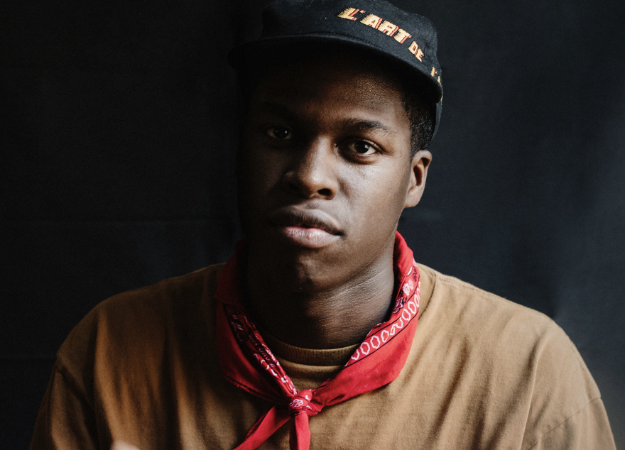

Caesar’s music is influenced by soul and gospel. His music draws from his childhood experiences and integrates them with R&B and electronics, while his lyrics explore subjects of religion, philosophy and unrequited love.

In his music, he often references concepts of philosophy. His singing voice reshapes itself on each track, often veering into a hushed, introspective lilting style. According to Caesar,
“In my religious surroundings growing up, the point is to be still, to direct as little attention to yourself as possible and instead, direct all attention to what you’re saying. Now, it’s kind of the opposite.”


Caesar cites Frank Ocean, Kanye West, Beyoncé, and The Doors frontman Jim Morrison as musical and stylistic inspirations.
Caesar works in close collaboration with producers Matthew Burnett and Jordan Evans, with whom he co-founded his independent label, Golden Child Recordings, and has co-produced almost all of his music with since 2015. Caesar is also part of an informal collaborative of Toronto-based musicians and songwriters that includes River Tiber, BadBadNotGood, and Charlotte Day Wilson, among others.